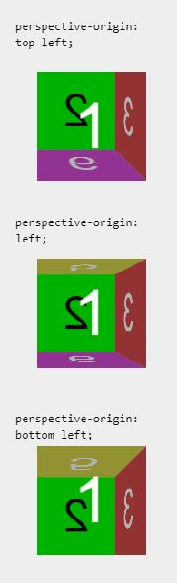
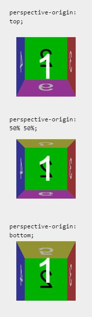
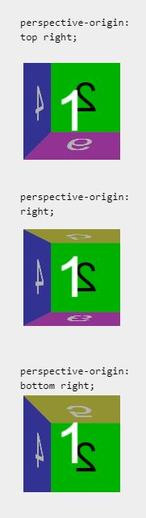

Zoom
Zoom recording - starts atLinks
Items can be rotated, skewed, scaled using CSS.
transform: rotate()
BOX
Note the difference.
X is flipped down/up
BOX
Y is flipped left/right
Note the difference.
Z spins clockwise
Box
Z spins clockwise
transform: scale()
BOX
BOX
BOX
BOX
transform: perspective(100px)
scaleZ(1) rotateX(45deg);
transform: skew()
BOX
BOX
BOX
BOX
transform: translate()
MDN states "Then, the translateZ() function moves the element 200 pixels "outward" from the screen, toward the user. This has the effect of making the element appear larger when viewed on a 2D display, or closer when viewed using a VR headset or other 3D display device."
BOX
BOX
BOX
BOX
BOX
text-transform:
Hover to make me uppercase.
HOVER TO MAKE ME LOWERCASE.
Hover to make me capitalized.
Perspective
To make a 3d item, the use of perspective is needed. Below are examples of how to use each.



Making a Cube with Transforms
The code for the cube is from 3dtransforms.desandro.com. Some styling and rotation was done by student.
front
back
right
left
top
bottom